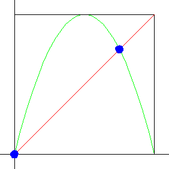
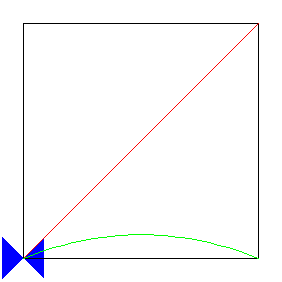

| First, we find the fixed points of the logistic map. If
xf stands for a fixed point of the logistic map, we know it
must satisfy the fixed point equation |
| xf = L(xf) |
| Using the logistic map
definition
L(x) = s⋅x⋅(1 - x), the fixed point equation becomes |
| xf = s⋅xf⋅(1 - xf) |
| so |
| s⋅xf2 + (1 - s)⋅xf = 0 |
| so |
| xf⋅(s⋅xf + (1 - s)) = 0 |
|
| and we obtain two fixed points |
| xf = 0 and xf = (s - 1)/s |
| Note the second fixed point is positive only when s > 1.
So for s ≤ 1 the logistic map has only one fixed point between 0 and 1.
Click on the picture to see how the fixed points of the logistic map change as s increases
to 4. |
| For which s-values are these fixed points stable? Recall when we
studied graphical iteration we asserted fixed points are
stable if the graph crosses the diagonal inside the "45°
blue bowtie." |
|  |
 |
| Click the picture to see how the fixed points of the logistic map
change as s increases to 4. |
Click the animation to stop. |
|
| In fact, with a little calculus we can prove |
| The fixed point xf = 0 is stable
for 0 ≤ s < 1. |
| The fixed point xf = (s - 1)/s is stable
for 1 < s < 3. |
|